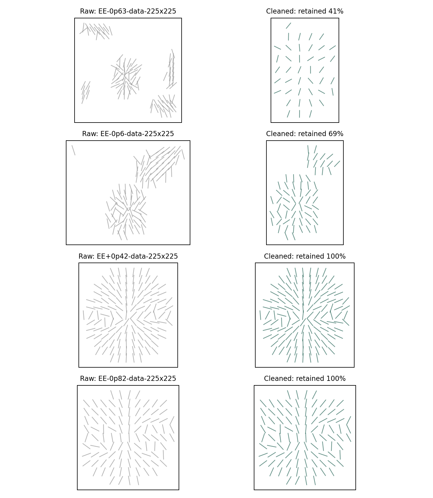
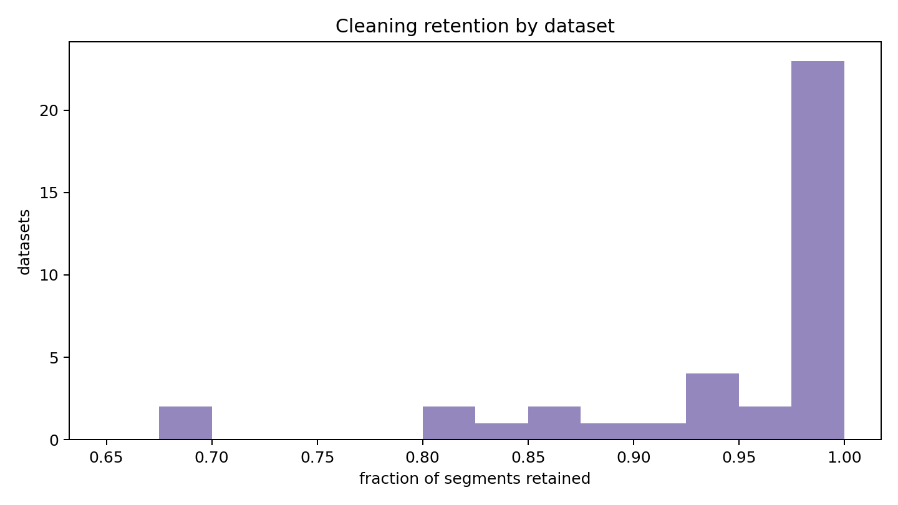
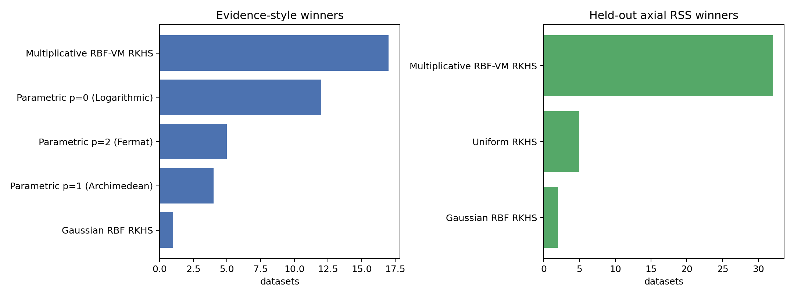
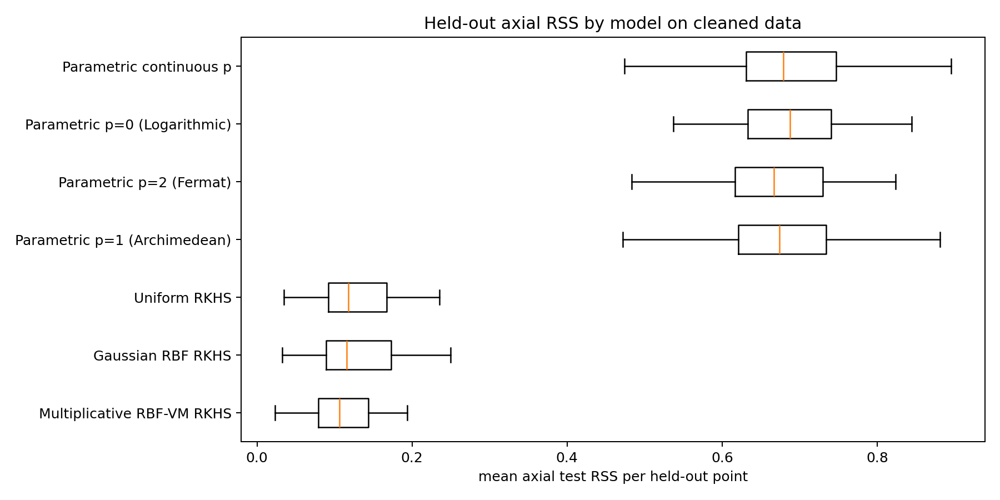
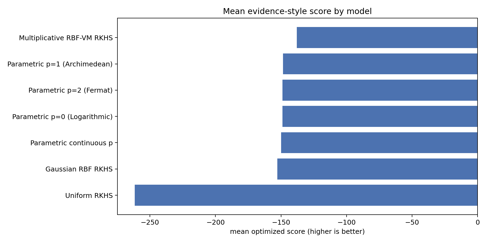

Datasets found: 39
Datasets processed after cleaning: 39
Datasets skipped: 0
The cleaned experiment starts from the same data/**/arrow_segments.mat files but treats each segment as an axial line-field observation, so phi and phi+pi represent the same biological orientation. A segment is retained only if its midpoint lies inside the central circular ROI of the corresponding arrow_maps.mat grid. For the available 150 x 150 arrow maps this uses center (75,75) and radius 0.39 * 150 = 58.5. This rule intentionally preserves the central circular line field and removes peripheral/extraneous line segments outside the circle.
Across the datasets, the median retention was 0.992, with range 0.414 to 1.000. The median cleaned sample size was 123 segments. The report therefore does not switch to a manually selected subset; it defines a cleaned version of every dataset by the same central-ROI rule.
Because the cleaned data are line fields, the primary loss is now axial RSS: r_i = 0.5 atan2(sin(2(phi_i-phi_hat_i)), cos(2(phi_i-phi_hat_i))). This resolves the sign ambiguity that previously made phi and phi+pi look maximally different under signed-angle RSS. The parametric models are unchanged geometrically: fixed p in {0,1,2} and continuous p in (-1,3) are fit by minimizing axial residuals. The kernel regressions are also made axial by fitting the doubled-angle embedding (cos 2phi, sin 2phi) with independent GP outputs under the same covariance matrix, then mapping predictions back to an orientation by 0.5 atan2(sin_hat, cos_hat).
The kernel bandwidth sweep is dataset-adaptive. For each cleaned dataset, let s_X=max(range(x), range(y), 1) and let d_nn be the median nearest-neighbor spacing. The 14 bandwidth candidates are ell in geomspace(max(0.5 d_nn, s_X/80, 1e-3), max(1.5 s_X, 4 max(0.5 d_nn, s_X/80, 1e-3)), 14). This replaces the earlier absolute grid geomspace(0.2, 220, 14), which mixed sub-pixel scales with scales larger than the cleaned field of view.
The RSS comparison is therefore the fairest comparison in this report: every model is trained only on the training folds and scored by held-out axial RSS. The evidence-style comparison is useful but should be read more carefully, because the kernel evidence is the optimized GP marginal likelihood of the two-dimensional doubled-angle embedding, while the parametric evidence is a BIC approximation from axial residuals. Both are reasonable evidence-style summaries of line-field fit, but they are not an exact common-prior Bayes factor calculation.
| model | wins |
|---|---|
| Multiplicative RBF-VM RKHS | 17 |
| Parametric p=0 (Logarithmic) | 12 |
| Parametric p=2 (Fermat) | 5 |
| Parametric p=1 (Archimedean) | 4 |
| Gaussian RBF RKHS | 1 |
| model | wins |
|---|---|
| Multiplicative RBF-VM RKHS | 32 |
| Uniform RKHS | 5 |
| Gaussian RBF RKHS | 2 |
| model | wins |
|---|---|
| Parametric p=0 (Logarithmic) | 18 |
| Parametric p=1 (Archimedean) | 10 |
| Parametric p=2 (Fermat) | 10 |
| Parametric continuous p | 1 |
| model | wins |
|---|---|
| Parametric p=1 (Archimedean) | 14 |
| Parametric p=2 (Fermat) | 12 |
| Parametric p=0 (Logarithmic) | 8 |
| Parametric continuous p | 5 |
| model | family | datasets | evidence_score_mean | evidence_score_median | p_median |
|---|---|---|---|---|---|
| Multiplicative RBF-VM RKHS | kernel_gp_line_embedding_lml | 39 | -137.8669 | -133.453 | |
| Parametric p=1 (Archimedean) | parametric_fixed_p | 39 | -148.5231 | -149.6385 | 1.0 |
| Parametric p=2 (Fermat) | parametric_fixed_p | 39 | -148.7812 | -150.1253 | 2.0 |
| Parametric p=0 (Logarithmic) | parametric_fixed_p | 39 | -148.9515 | -151.2532 | 0.0 |
| Parametric continuous p | parametric_continuous_p | 39 | -149.9811 | -151.756 | 0.4071 |
| Gaussian RBF RKHS | kernel_gp_line_embedding_lml | 39 | -152.7398 | -143.4758 | |
| Uniform RKHS | kernel_gp_line_embedding_lml | 39 | -261.6682 | -261.9097 |
| model | family | datasets | mean_test_rss_mean | mean_test_rss_median | mean_test_mae_deg_mean | p_median |
|---|---|---|---|---|---|---|
| Multiplicative RBF-VM RKHS | kernel_gp_line_embedding_cv | 39 | 0.1079 | 0.106 | 11.4955 | |
| Gaussian RBF RKHS | kernel_gp_line_embedding_cv | 39 | 0.1291 | 0.116 | 12.5354 | |
| Uniform RKHS | kernel_gp_line_embedding_cv | 39 | 0.1302 | 0.1176 | 12.8051 | |
| Parametric p=1 (Archimedean) | parametric_fixed_p | 39 | 0.6783 | 0.6742 | 39.8836 | 1.0 |
| Parametric p=2 (Fermat) | parametric_fixed_p | 39 | 0.6828 | 0.667 | 40.111 | 2.0 |
| Parametric p=0 (Logarithmic) | parametric_fixed_p | 39 | 0.6889 | 0.6875 | 40.1406 | 0.0 |
| Parametric continuous p | parametric_continuous_p | 39 | 0.6953 | 0.6789 | 40.3323 | 0.3872 |





cleaning_stats.csvkernel_evidence_by_dataset.csvkernel_cv_rss_by_dataset.csvparametric_full_data_scores.csvparametric_cv_scores.csvcombined_evidence_scores.csvcombined_cv_rss_scores.csvevidence_summary.csvrss_summary.csvevidence_winners.csvrss_winners.csv